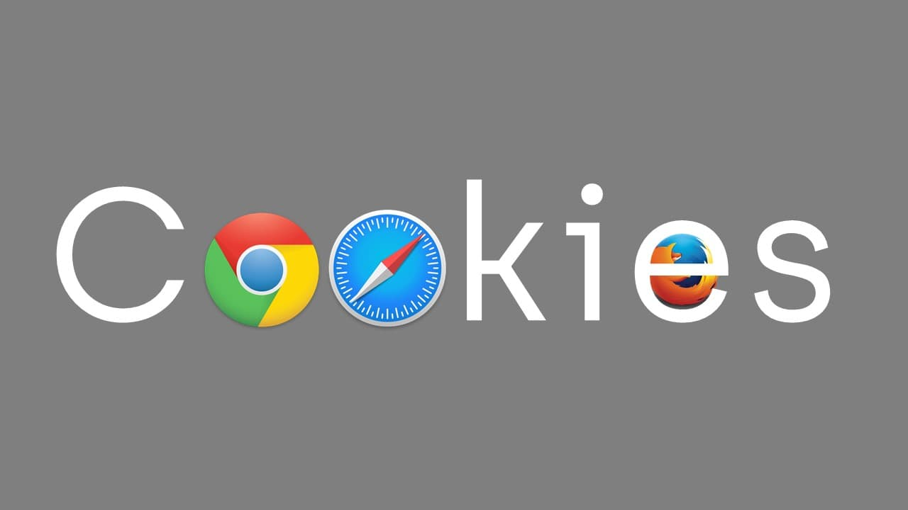

Instead of getting design rewards it had some flaws. It could not purify the air completely and thus the water remained unfit to drink. The FONTUS could not purify air which had small microbes or bacteria if they were small. The company also faced bankruptcy.FONTUS is available in 2 categories AIRO and RYDE. FONTUS AIRO is used by travelers and trekkers. It has a comparatively large solar panel which can be detached. It usually makes water when it is stationary. FONTUS RYDE is used by bicycle travelers. It has small solar panel which covers the bottle. It can be detached or attached to the bicycle anytime. When the bicycle moves it creates air resistance. These air streams get inside the bottle and form water. 